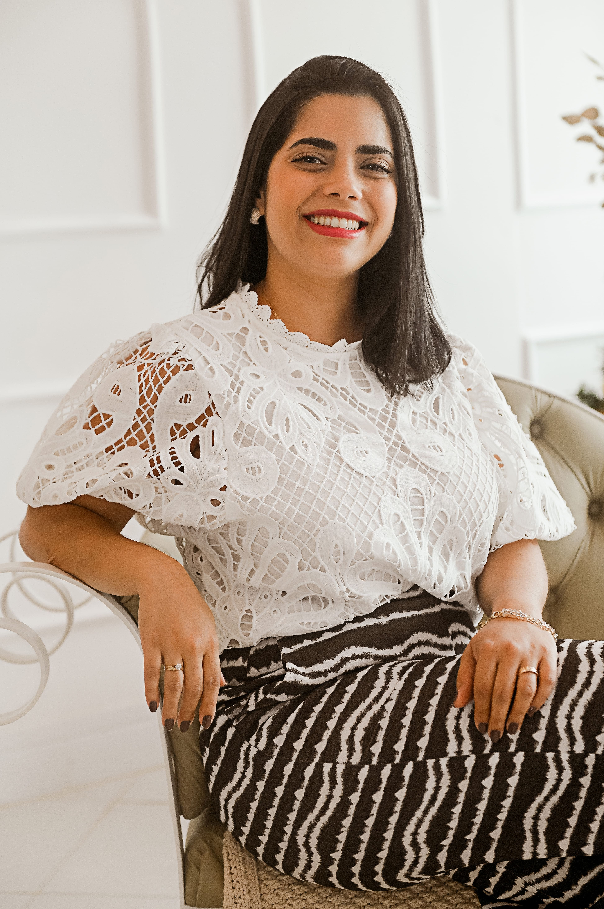
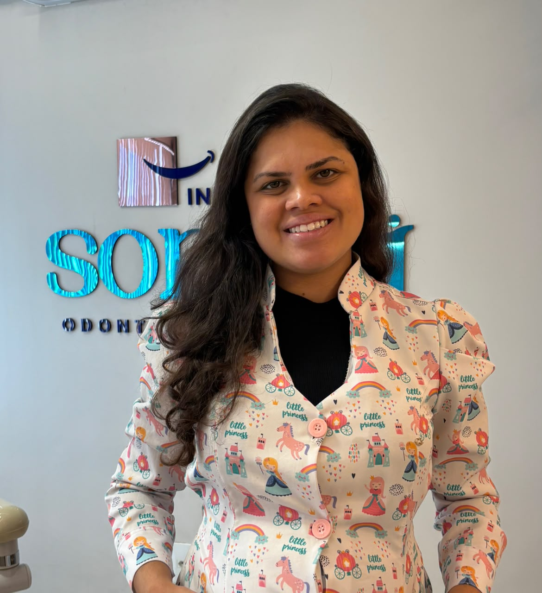
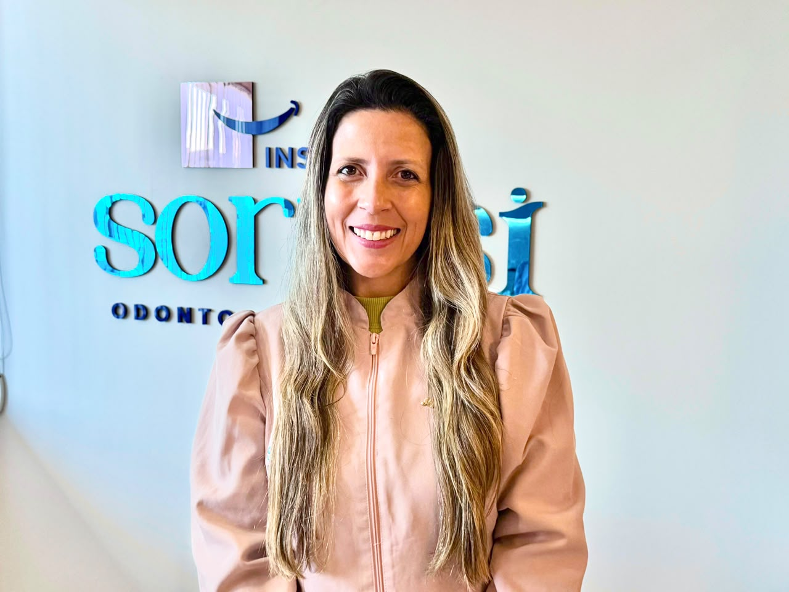
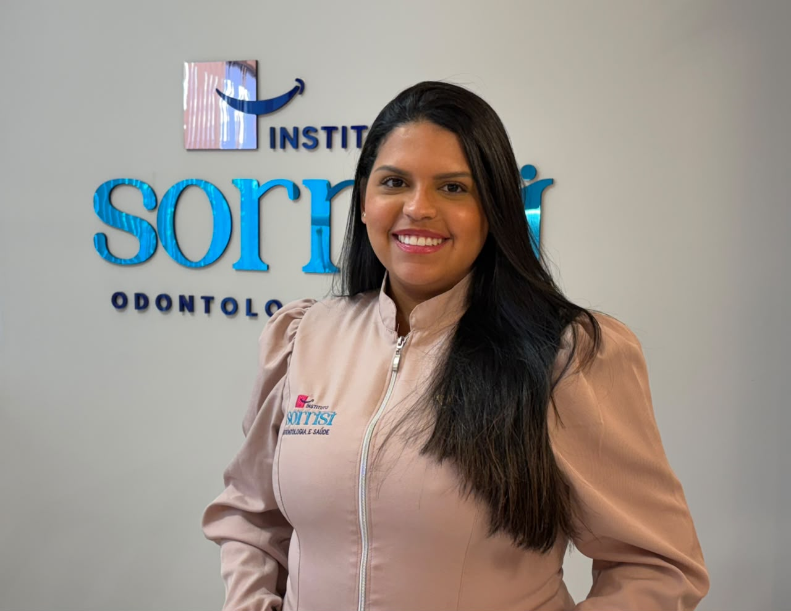
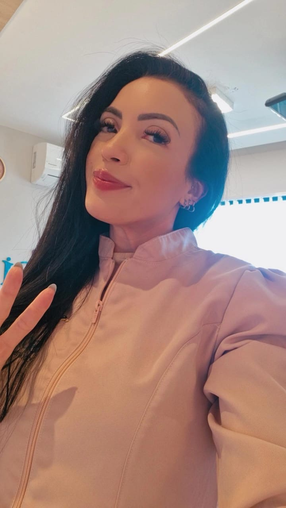
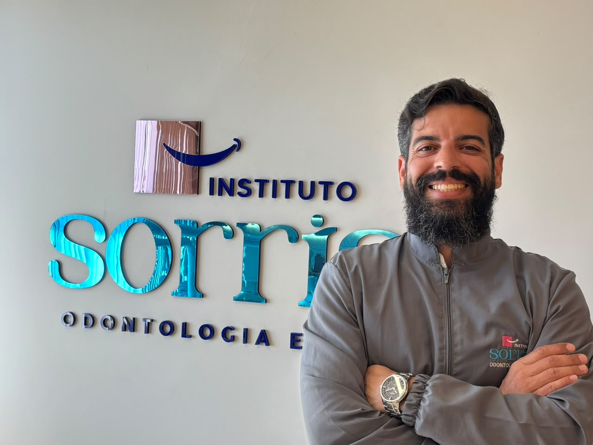

Profissionais que
cuidam do seu sorriso
Dentistas com formação de ponta e atendimento personalizado em Rio das Ostras/RJ.

Dra. Vanessa C.
Barros Scotta
Especialista em Ortodontia · Invisalign Doctor
A Dra. Vanessa Scotta fundou o Instituto Sorrisi em 2015. Especialista em Ortodontia, construiu a clínica com foco em excelência técnica e atendimento próximo, porque para ela, cada tratamento muda a autoestima do paciente.
Credenciada como Invisalign Doctor, é referência regional em ortodontia com alinhadores invisíveis, proporcionando tratamentos discretos, confortáveis e eficazes para adultos e adolescentes em Rio das Ostras e toda a região.

Dra. Sindy
Alves
Especialista em Odontopediatria · Habilitação em Laserterapia
A Dra. Sindy Alves é especialista em Odontopediatria e atende desde bebês até adolescentes. Com paciência e técnica, ela transforma a visita ao dentista em uma experiência tranquila para as crianças.
Possui habilitação em Laserterapia pelo CFO, recurso que permite procedimentos com menos desconforto e recuperação mais rápida, especialmente valioso no atendimento infantil.
Agendar com Dra. Sindy
Dra. Juliana
Sartori
Dentística Restauradora · Próteses Dentárias · Odontologia do Trabalho
A Dra. Juliana Sartori é referência em Dentística Restauradora no Instituto Sorrisi, a área que cuida da estética e da função das restaurações dentárias, com materiais e técnicas de alta qualidade.
Ela é a profissional responsável pela confecção das próteses dentárias no próprio consultório, garantindo resultado personalizado, com estética natural e encaixe preciso para cada paciente.
Atua também na área de Odontologia do Trabalho, voltada à saúde bucal do trabalhador e às exigências dos ambientes ocupacionais.
Agendar com Dra. Juliana
Dra. Ana
Livia
Clínica Geral · Atendimento em Saúde Periodontal
A Dra. Ana Livia atua na Clínica Geral com foco especial na saúde periodontal, o conjunto de tecidos que sustentam os dentes, incluindo a gengiva e o osso alveolar.
Seu atendimento abrange desde procedimentos de rotina (restaurações, profilaxia, clareamento) até o diagnóstico e tratamento de gengivite e periodontite, com abordagem preventiva e cuidadosa.
Agendar com Dra. Ana Livia
Dra.
Patrícia
Harmonização Orofacial · Exodontia de Terceiros Molares
A Dra. Patrícia realiza procedimentos de Harmonização Orofacial (HOF), uma abordagem que combina técnicas odontológicas e estéticas para equilibrar as proporções do rosto, valorizando o sorriso e os traços naturais de cada paciente.
Também realiza exodontia de terceiros molares (sisos), incluindo casos de sisos inclusos ou semi-inclusos que requerem cirurgia oral, com técnica precisa e atenção ao conforto pós-operatório.
Agendar com Dra. Patrícia
Dr.
Ringo
Cirurgia de Implantes Dentários · Cirurgia Oral
O Dr. Ringo é o cirurgião-dentista responsável pelos procedimentos de implante dentário no Instituto Sorrisi. Com experiência em cirurgia oral, ele conduz desde casos simples de implante unitário até reabilitações mais complexas com múltiplos implantes.
Seu planejamento é cuidadoso, baseado em tomografia computadorizada e análise detalhada do osso, para garantir resultados seguros, precisos e duradouros para cada paciente.
Agendar com Dr. Ringo
Dr. Saulo
Luiz
Clínica Geral · Exodontia de Terceiros Molares
O Dr. Saulo Luiz é clínico geral do Instituto Sorrisi, atendendo uma ampla gama de procedimentos do cotidiano odontológico: restaurações, profilaxia, clareamento, urgências e acompanhamento preventivo.
Realiza exodontia de terceiros molares (sisos), incluindo casos cirúrgicos, com técnica cuidadosa e atenção ao bem-estar do paciente durante e após o procedimento.
Agendar com Dr. Saulo